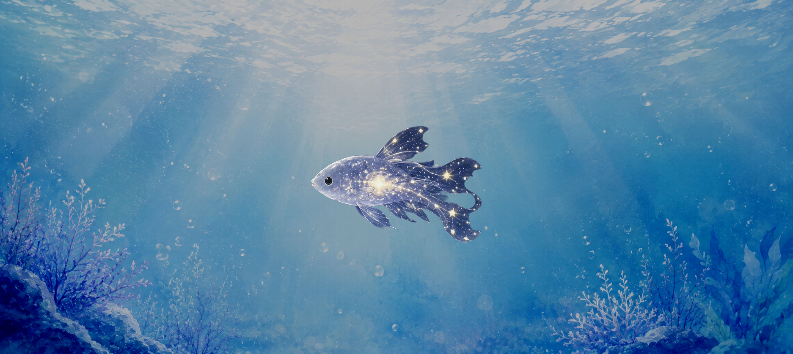
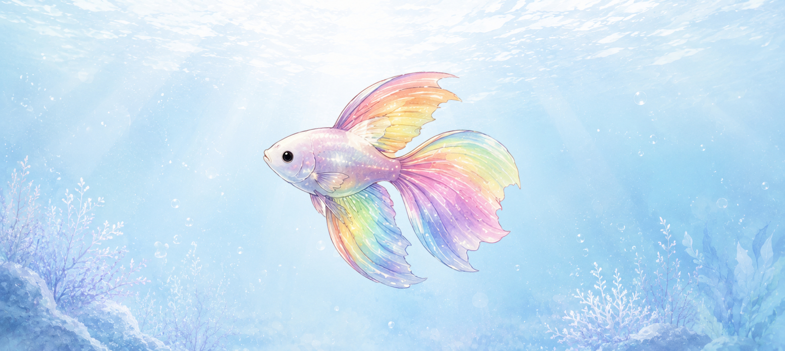
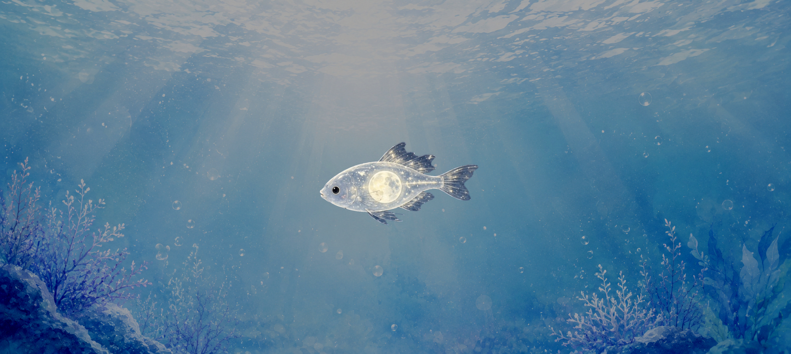
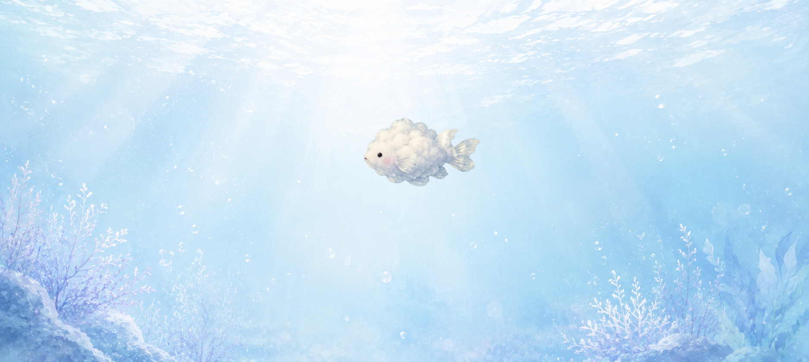
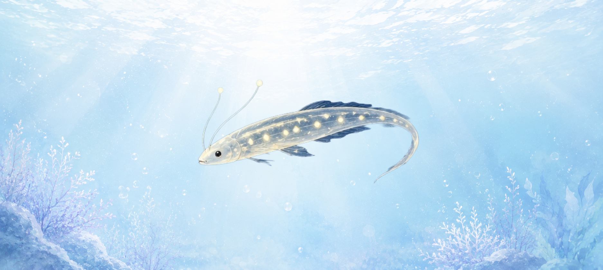
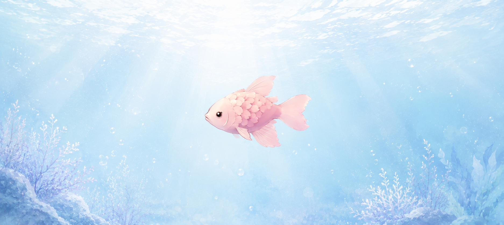

今週のユメウオ
今週紹介する不思議なユメウオたちの特徴や生態をまとめています。
目次
ホシナガレウオ

夜空を流れる星の光を集めて泳ぐといわれるユメウオです。 尾びれが星屑のように輝き、夜になるほど美しい光を放ちます。
ニジヒレウオ

七色に変化するひれを持つ魚です。 天気によって体の色が変化し、晴れの日には鮮やかな虹色になります。
ツキヨミウオ

満月の夜にだけ現れると言われています。 月の光を浴びると銀色に輝きながら静かに泳ぎます。
クモノミ

雲の近くを漂う珍しい魚です。 空を泳いでいるように見えることから多くの目撃談があります。
ヒカリクジラウオ

巨大な体を持ちながら非常に穏やかな性格です。 体表の発光模様は見る人によって違って見えると言われています。
ユメサクラウオ

春になると桜の花びらのようなうろこをまといます。 その姿は非常に美しく、幸運を呼ぶ魚として知られています。